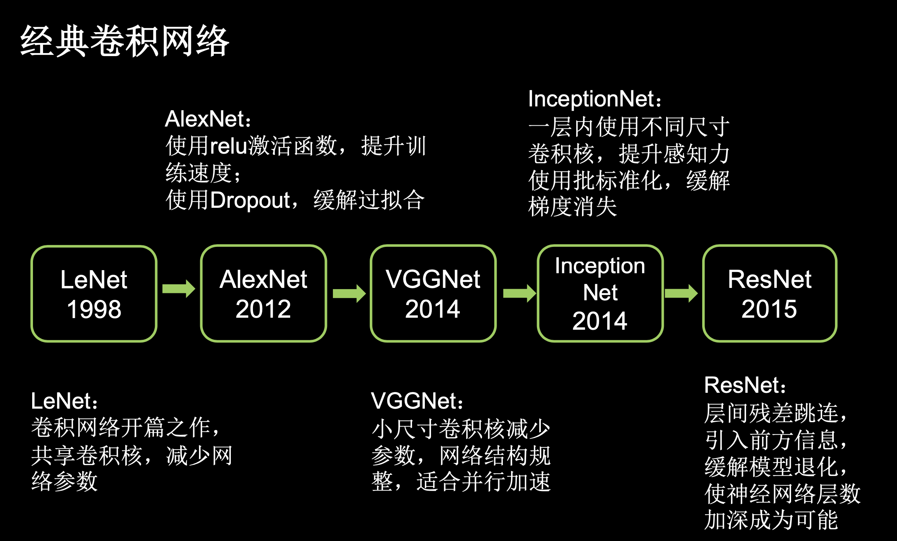

TensorFlow2 notebook: Class5: 卷积神经网络.
In summary
5.0 回顾
- 全连接NN:
- 每个神经元与前后相邻层的每一个神经元都有连接关系, 输入是特征, 输出为预测的结果.
- 参数个数:
- ∑各层(前层神经元 x 后层神经元 + 后层神经元)
5.1 卷积计算过程
- 卷积Convolutional
- 一种有效提取图像特征的方法
- 一个正方形的卷积核
- 指定步长滑动
- 每一个步长, 卷积核会与输入特征图出现重合区域, 重合区域对应元素相乘与求和,最后加上偏置项, 得到输出特征的一个像素点
- 遍历输入特征图中的每个像素点
- 输入特征图的深度(channel数), 决定了当前层卷积核的深度
- 当前层卷积核的个数，决定了当前层输出特征图的深度
5.2 感受野Receptive Field
- 卷积神经网络各输出特征图中的每个像素点，在原始输入图片上映射区域的大小
5.3 全零填充padding
- TF描述全零填充
- 全零填充时, 参数为
padding = ‘SAME’, 此时的输出特征图片边长=输入特征图片边长/步长 - 不全零填充时, 参数设置为
padding = ‘VALID’, 此时的输出特征图片边长=输入特征图片边长-卷积核核长+1/步长 - 输出特征图边长向上取整
- 全零填充时, 参数为
5.4 TF描述卷积计算层函数
|
|
5.5 批标准化(Batch Normalization, BN)
- 标准化
- 使数据符合0均值，1为标准差的分布。
- 批标准化
- 对一小批数据(batch)，做标准化处理。
- 为每个卷积核引入可训练参数𝜸和𝜷，调整批归一化的力度。
- BN层位于卷积层之后，激活层之前
- TF描述批标准化函数
|
|
5.6 池化Pooling
- 用于减少特征数据量
- 最大值池化可提取图片纹理
- 均值池化可保留背景特征
- TF描述最大化池化函数
|
|
- TF描述均值池化函数
|
|
5.7 舍弃Dropout
- 在神经网络训练时，将一部分神经元按照一定概率从神经网络中暂时舍弃(～休眠)。神经网络使用时，被舍弃的神经元恢复链接
- TF描述池化函数
|
|
5.8 卷积神经网络
- 卷积核提取特征
- 送入全连接网络
- 卷积神经网络网络的主要模块
- Convolutional卷积
- BN批标准化
- Activation激活
- Pooling池化
- Dropout舍弃
- 卷积是什么?
- 卷积就是特征提取器，就是CBAPD
5.9 Cifar10数据集
-
彩色图片
-
由6万张(32x32) 像素点的彩色图片和十分类标签构成, 其中
- 5万张作为训练集
- 1万张作为测试集
-
导入数据集
1 2cifar10 = tf.keras.datasets.cifar10 (x_train, y_train),(x_test, y_test) = cifar10.load_data()
5.10 卷积神经网络搭建示例
- 共3层神经网络
- 1层卷积
- C(核:655，步长:1，填充:same )
- B(Yes)
- A(relu)
- P(max，核:2*2，步长:2，填充:same)
- D(0.2)
- 2层全连接
- Flatten
- Dense(神经元:128，激活:relu，Dropout:0.2)
- Dense(神经元:10，激活:softmax)
- 1层卷积
- 训练结果保存在checkpoint文件夹以及weights.txt文件中
5.11 LeNet
- Yann LeCun于1998年提出
- 那年没有BN, 没有Dropout
- 激活函数只有Sigmoid
- 卷积网络的开篇之作
- 共享卷积核，减少了网络的参数
- 共5层网络
- 2层卷积计算层
- 3层全连接计算层
- 训练结果保存在checkpoint文件夹以及weights.txt文件中
5.12 AlexNet
- 诞生于2012年，当年ImageNet竞赛的冠军，Top5错误率为16.4%
- 用到了LRN(local response normalization局部响应标准化, 非现如今的主流BN方法)
- relu激活函数
- Dropout缓解过拟合
- 共8层网络
- 5层卷积层
- 3层全连接层
5.13 VGGNet
- 诞生于2014年，当年ImageNet竞赛的亚军，Top5错误率减小到7.3%
- 小尺寸卷积核
- 网络结构规整, 适合硬件加速
- 16层网络
- 13层卷积(
CBACBAPDCBACBAPDCBACBACBAPDCBACBACBAPDCBACBAPDCBAPD) - 3层全连接
- 13层卷积(
5.14 InceptionNet
- 诞生于2014年，当年ImageNet竞赛冠军，Top5错误率为6.67%
- Inception结构块为基本单元
- 包含4分支, 分别由
1*1卷积核输出到卷积连接器;1*1卷积核配合3*3卷积核输出到卷积连接器;1*1卷积核配合5*5卷积核输出到卷积连接器;3*3最大池化核配合1*1卷积核输出到卷积连接器;
- 卷积连接器将4分支特征数据按照深度方向拼接，作为输出
- 在同一层网络内使用多个不同尺寸的卷积核, 提取不同尺寸的特征
- 通过设定
1*1卷积核的个数,减少了输出特征图的深度,达到降维作用 - 减少参数量和计算量
- 包含4分支, 分别由
- 使用BN缓解梯度消失
5.15 ResNet
- 诞生于2015年，当年ImageNet竞赛冠军，Top5错误率为3.57%
- 提出了层间残差跳连, 引入了前方信息,防止前边特征丢失, 使得可以增加神经网络层数
- 跳连线
- 将前边特征直接接到后边
- 使得神经网络可以更深发展
- 两路特征图对应元素值相加
- 虚线表示不同维度:
H(x)=F(x)+W(x), W是1*1卷积操作，调整x的维度 - 实线表示相同维度:
H(x)=F(x)+x, 做矩阵相加
- 虚线表示不同维度:
5.16 经典卷积网络小结

Attach is the file of TensorFlow2class5.ipynb, or view it via the link.
Show me the code